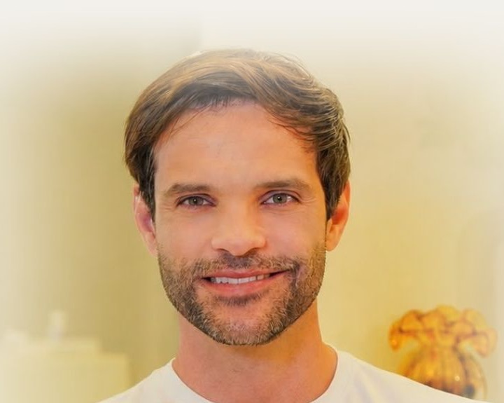
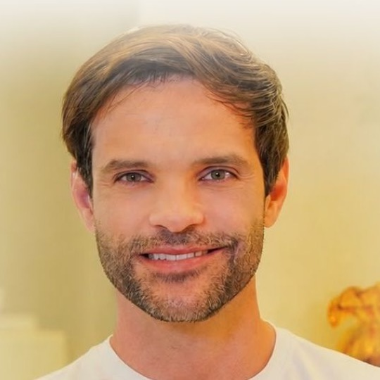

Nichollas, analisei o @drnichollasmourao, o seu site e o caminho que um paciente de Americana percorre até marcar a consulta. Aqui eu mostro onde o perfil perde agendamentos hoje e o plano que eu defini para os próximos 90 dias em Americana, Nova Odessa, Sumaré e Santa Bárbara d'Oeste.

Antes de falar do que falta, quero registrar o que já está construído. São ativos que levam anos para existir e que hoje trabalham abaixo do que poderiam.
Onde o perfil deixa agendamento na mesa
Quem chega pelo Explorar ou por um Reels compartilhado não descobre que você está em Americana. O destaque "Localização" existe, mas exige um clique que a maioria das pessoas não dá.
A bio termina em "Agende sua…" e o resto some atrás do "mais". A frase mais importante do perfil é justamente a que ninguém lê.
O link da bio leva ao site, e o WhatsApp de Americana abre com "gostaria de saber como funciona a consulta". Uma conversa que nasce como pergunta esfria mais rápido do que uma que nasce como pedido de horário.
Entre 25 de setembro e 23 de outubro o feed ficou quase um mês sem post novo. Depois vieram três publicações em cinco dias (6, 9 e 10 de novembro). O algoritmo distribui menos para quem some, e o seguidor esquece.
Memes e vídeos de fisiculturismo geram curtida de qualquer lugar do Brasil. Engajam, mas quem mora em Recife não marca consulta no Jardim Glória.
O Instagram diz +4.000 pacientes e o site diz mais de 3 mil. Parece detalhe, mas para quem ainda está decidindo se confia, qualquer divergência pesa. Também não encontrei seu perfil no Doctoralia, que é onde muita gente da região pesquisa médico.
Hoje o perfil cresce para o Brasil.
A sua agenda mora em quatro cidades.
Eu defini o crescimento a partir do mapa. Todas as cidades ficam num raio de cerca de 15 km do consultório no Jardim Glória, e cada seguidor novo que mora aqui vale mais do que dez seguidores de fora.
O paciente que eu quero que o perfil atraia
Homens e mulheres de 30 a 55 anos da região. Empresários, gestores e profissionais liberais com rotina pesada, que treinam ou querem voltar a treinar e sentem que o corpo não acompanha mais o ritmo.
O médico da região que treina como o paciente e mede antes de prescrever.
Essa é a tese que eu escolhi para o perfil. Ela junta o que você já tem de mais forte (formação USP, Medicina do Esporte, faixa preta, mais de quatro mil pacientes) com a frase que o seu site já usa: "Cuidado médico à altura da sua rotina." O jiu-jitsu deixa de ser curiosidade da bio e passa a ser a prova de que você entende o corpo de quem não pode parar.
O consultório de São Paulo (Jardim Paulista) fica fora deste plano. Aqui o foco é a região de Americana.
Movimento 1 · 48 horas

O campo de nome é o único texto do perfil que entra na busca do Instagram. Com Nutrólogo em Americana ali, você passa a aparecer para quem pesquisa isso na região.
Cinco linhas: formação, o que você resolve, onde atende, a prova e o convite para agendar. A cidade aparece antes de qualquer outra informação de contexto.
O link da bio vai direto ao WhatsApp de Americana com a mensagem Olá! Vi seu Instagram e quero agendar minha consulta em Americana. A conversa já nasce como pedido de horário.
Primeiro Agende (como funciona a consulta e os horários), depois Onde atendo, Método, Pacientes, Dúvidas e Meu treino. Os nomes ficam claros para quem chega pela primeira vez.
Um Reels de apresentação citando Americana, um carrossel "Como funciona a primeira consulta, do exame ao plano" e um Reels mostrando o caminho até o consultório e como agendar.
Movimento 2 · conteúdo contínuo
Cansaço, sono, energia, o empresário que não para. É onde o paciente se reconhece e pensa "isso sou eu".
Como você investiga, o que olha em um exame, por que a avaliação conecta os pontos. Toda quinta, um "exame comentado" sem identificar o paciente.
Seu treino de jiu-jitsu, sua alimentação, sua rotina. Esse pilar ocupa o espaço dos memes e prova que você vive o que recomenda.
A cidade no gancho, na legenda e na imagem. Gravações em lugares reconhecíveis da região e collabs com academias das quatro cidades.
Quatro Reels e um carrossel por semana, com stories todos os dias. Para isso não depender da sua agenda, eu organizo um dia de gravação por mês com 16 roteiros prontos.
"Para agendar sua consulta em Americana, toque no link da minha bio."
Movimento 3
O orgânico constrói autoridade, e o anúncio leva essa autoridade para as pessoas certas das quatro cidades. Montei três etapas, e cada uma exclui quem já passou para a seguinte, para a verba não se repetir na mesma pessoa.
Os melhores Reels de Rotina real e Território, para pessoas de 28 a 55 anos das quatro cidades. Dois conjuntos: Americana + Nova Odessa (60%) e Sumaré + Santa Bárbara (40%).
O vídeo "Como funciona a consulta" e o exame comentado para quem engajou com o perfil nos últimos 60 dias ou assistiu metade de um Reels.
Você mesmo convidando, em vídeo curto: "Estou com horários em Americana esta semana." O botão abre o WhatsApp com o pedido de agendamento já escrito.
A verba que eu defini, condicionada ao resultado
Primeiro mês para descobrir o custo real por conversa e por consulta marcada na região.
Sobe só se o custo por consulta agendada ficar dentro da meta definida no dia 30.
Entra também a busca no Google para quem já procura "nutrólogo em Americana".
Simulação com referências de mercado para saúde no interior de São Paulo. Os valores reais saem do primeiro mês de anúncio. Ajuste o valor da consulta para o seu. O cálculo considera só a primeira consulta, sem retornos e acompanhamento.
Fora do Instagram
Perfil da Empresa completo no endereço de Americana, com fotos do consultório, horários e o link de agendamento. Depois de cada consulta, a equipe pede a avaliação ao paciente.
Hoje não existe perfil seu por lá. O cadastro básico coloca você na busca de quem procura nutrólogo e médico do esporte nas quatro cidades.
Uma collab por mês com academias de jiu-jitsu, musculação e assessorias de corrida das quatro cidades: um Reels juntos e uma conversa com os alunos. Sem pagamento por indicação, que o CFM veda.
Todo o trabalho dos capítulos anteriores termina numa conversa. Se ela demora ou não oferece horário, o paciente que já estava pronto vai embora. Por isso eu padronizei o atendimento.
No horário comercial. Fora dele, mensagem automática dizendo quando a equipe responde.
Nunca "qual horário fica bom para você?". Sempre duas opções reais da semana.
Em 24 horas, em 72 horas e em 7 dias. Quem some quase sempre se distraiu, e poucos desistiram de verdade.
Anúncio, orgânico, Google, indicação e a cidade. Sem isso não dá para saber o que trouxe cada consulta.
Os 90 dias
Como eu vou medir
O que eu preciso de você para começar
Os números de registro de cada especialidade, para entrar na bio, no site e nos anúncios.
Dias e horários disponíveis e o valor da consulta, para o anúncio oferecer horário real.
O nome da pessoa que atende, para eu treinar o roteiro e as retomadas.
Uma manhã por mês no consultório ou no treino. Eu chego com os 16 roteiros prontos.
Gerenciador de Anúncios e insights do Instagram, para registrar o ponto de partida no dia 1.
3 mil ou 4 mil pacientes. Escolhemos o número certo e ele passa a ser o mesmo em todo lugar.
Se você aprovar, eu começo pelos ajustes de perfil nas primeiras 48 horas, porque eles custam pouco e já mudam o que acontece com cada visita. Em seguida entram a gravação, o WhatsApp e os anúncios. Em 90 dias eu volto com os números e a gente decide o próximo passo juntos.